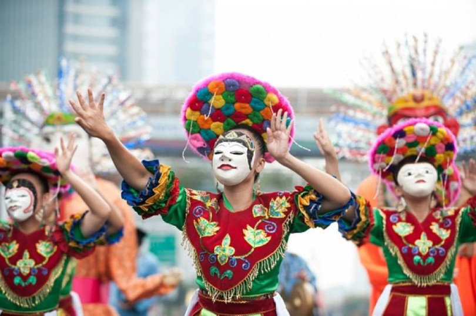
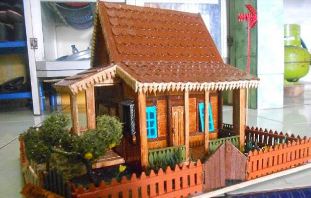

Mempelajari berbagai macam kebudayaan suku bangsa lainnya yang ada di bumi nusantara ini tak lengkap rasanya bila tidak mengulas dan membahas salah satu suku yang berada di Ibu kota Indonesia, Jakarta. Tanpa banyak disebutkan mungkin kita sudah mengenal atau minimal mengetahui namanya yakni suku betawi. Suku betawi merupakan salah satu suku bangsa yang ada di Indonesia dan menetap diwilayah jakarta.
Suku betawi sangat populer dan dikenal karena sering sekali menjadi bahan cerita dalam sinetron sinetron maupun acara di berbagai stasiun tv sejak lama. Bahkan salah satu sinetron terkenal tahun 90an mengangkat kisah utuh dari masyarakat betawi melalui judulnya “Si Doel Anak Sekolahan”. Beberapa bentuk kehidupan suku betawi dapat tergambar jelas didalam sinetron Indonesia pertama yang ditayangkan di televisi tersebut.
Menurut wikipedia, beberapa pihak berpendapat bahwa Suku Betawi merupakan suku yang berasal dari hasil perkawinan antar etnis dan bangsa pada masa lalu. Secara biologis, sejumlah kelompok orang yang mengaku sebagai orang Betawi adalah keturunan kaum berdarah campuran aneka suku dan bangsa yang didatangkan oleh Belanda ke Batavia pada masa penjajahan Indonesia.
Melihat fakta tersebut, maka apa yang disebut dengan orang atau suku Betawi sebenarnya terhitung pendatang baru di Jakarta. Kelompok etnis ini lahir dari perpaduan berbagai kelompok etnis lain yang sudah lebih dulu hidup di Jakarta. Sama halnya dengan kebudayaan suku bali dan suku suku lainnnya di Indonesia. Suku betawi juga memiliki kebudayaan tersendiri seperti dijelaskan pada ulasan di bawah ini.

Kesenian Suku Betawi Jakarta
Sama halnya seperti kebudayaan suku sunda dan suku bangsa lainnya, suku betawi juga memiliki kesenian kesenian khas yang berkembang menjadi sebuah seni budaya. Kesenian tersebut dapat dilihat dan dinikmati sampai sekarang baik melalui kelompok seni maupun dalam kegiatan peringatan tertentu. Kesenian betawi terdiri dari beberapa cabang cabang seni seperti seni musik, seni tari, dan seni pertunjukan berupa drama.
Dari bidang seni musik, suku betawi memiliki berbagai macam seni khas yang merupakan asimilasi dari beberapa seni yang masuk ke betawi. Beberapa seni di betawi diantaranya seni gambang kromong yang merupakan seni musik dari Tionghoa, rebana yang merupakan seni musik dari Arab, orkes samrah yang berasal dari melayu, keroncong tugu yang merupakan perpaduan seni portugis dan arab, tanjidor dari belanda. Suku betawi juga memiliki lagu daerah yang berjudul “kicir kicir.”

Rumah Adat
Suku betawi sebagai suku bangsa di Indonesia juga memiliki rumah adat yang menjadi ciri khasnya. Namun saat ini rumah adat dari suku betawi sudah tidak lagi digunakan sebagai rumah sehari hari karena banyaknya pengaruh modernisasi di jakarta. Rumah adat betawi memiliki nama rumah kebaya dan mungkin saat ini hanya dapat ditemukan di musem. Selain rumah adat, masyarakat betawi juga mempunyai senjata traditional yang bernama bendo atau golok dengan sarung kayu.